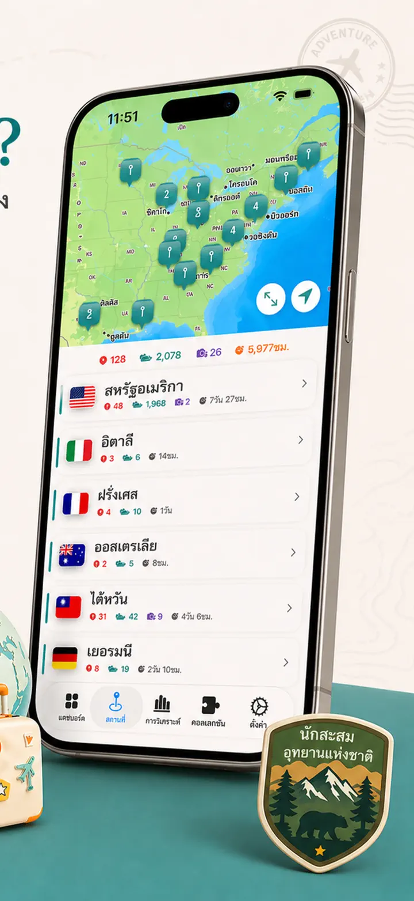
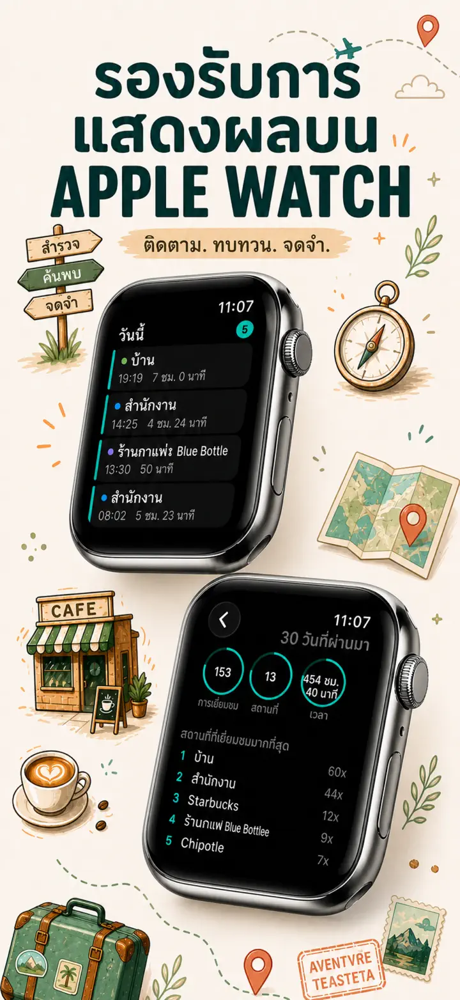
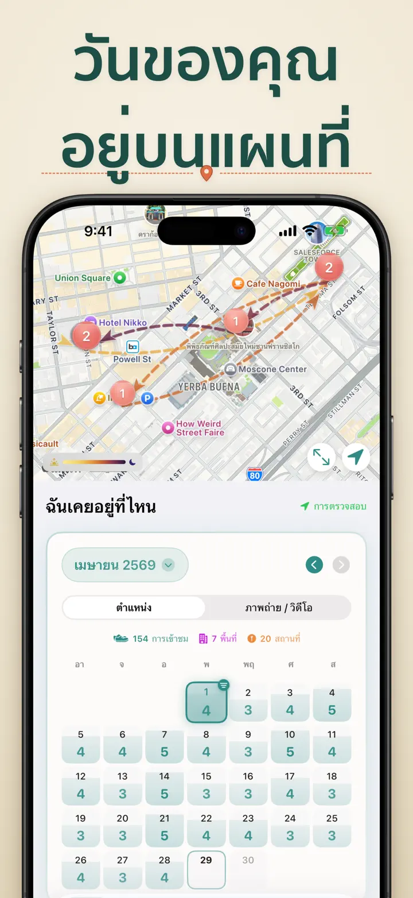
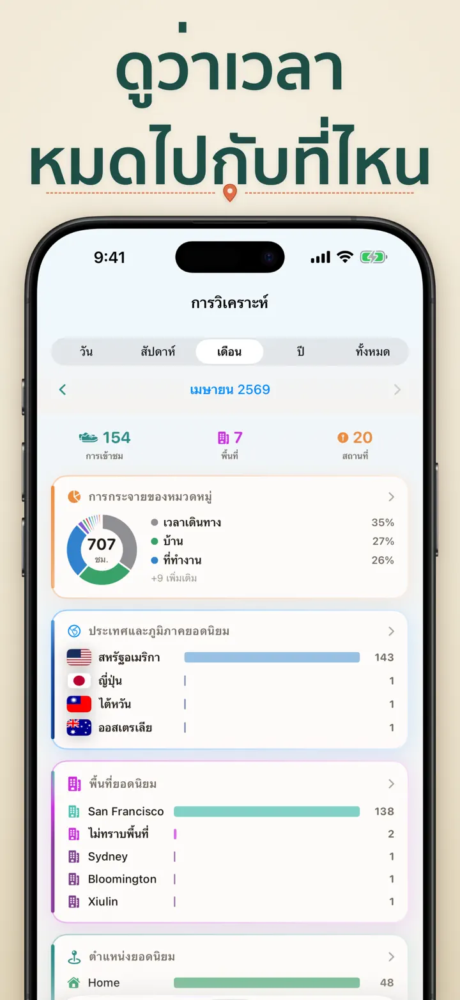
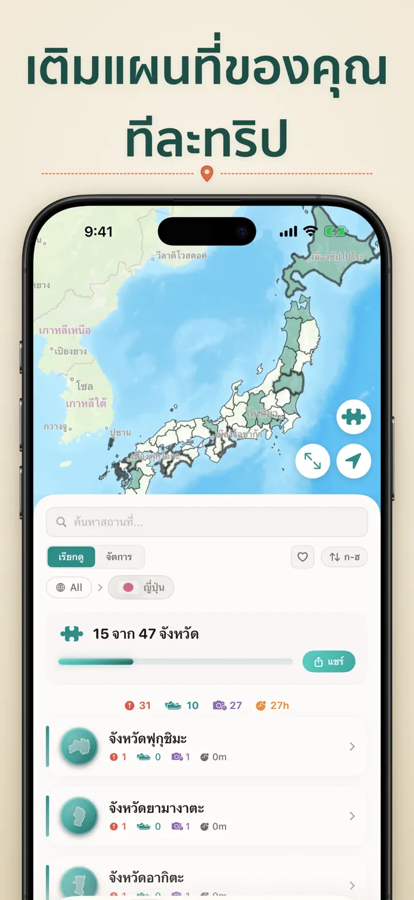
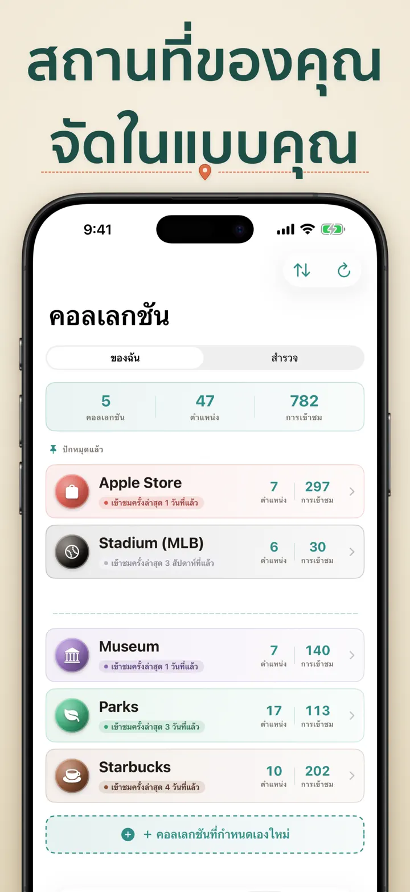
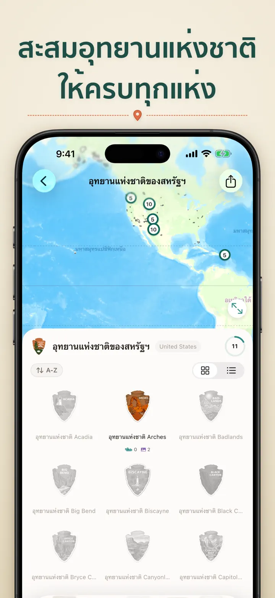
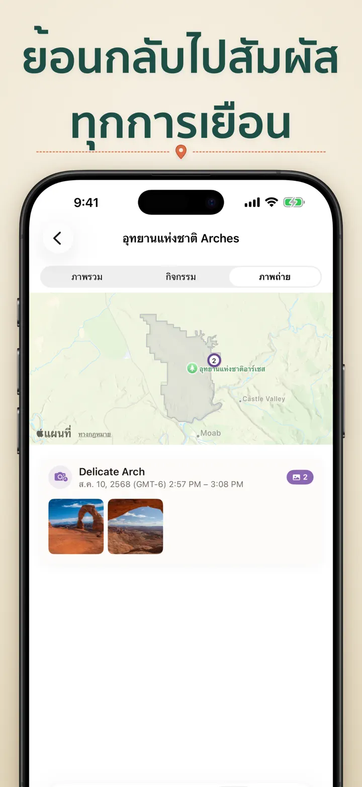

ฉันเคยอยู่ที่ไหน
ติดตามสถานที่และทริปอัตโนมัติ
ใหม่: 103 ศาลเจ้าอิจิโนะมิยะของญี่ปุ่น แต่ละแห่งมีตราแกะสลักของตัวเอง ติดตามการเข้าชมอัตโนมัติและไทม์ไลน์ส่วนตัว ทั้งหมดอยู่ในเครื่องของคุณ
ดาวน์โหลดจาก App Storeเกี่ยวกับแอป
Where was I ? — ความทรงจำสถานที่ส่วนตัวของคุณ
เคยพยายามนึกถึงร้านอาหารสุดเจ๋งจากเดือนที่แล้วไหม? หรือสงสัยว่าคุณใช้เวลาที่ออฟฟิศกับที่บ้านมากน้อยแค่ไหน? Where was I ? ติดตามการเข้าชมของคุณอัตโนมัติ และสร้างไทม์ไลน์ที่สวยงามของการเดินทางในชีวิต
ติดตามอัตโนมัติ
ไม่ต้องบันทึกด้วยมือ แอปจะบันทึกเงียบๆ ว่าคุณเข้าและออกจากสถานที่เมื่อใด สร้างประวัติการเข้าชมที่ละเอียดโดยไม่ต้องลงแรง
ปฏิทินอัจฉริยะ
ดูการเข้าชมของคุณจัดเรียงตามวัน สัปดาห์ หรือเดือน ปฏิทินที่ใช้งานง่ายแสดงจำนวนการเข้าชมและสถานที่ไม่ซ้ำกันในพริบตา แตะวันใดก็ได้เพื่อดูว่าคุณอยู่ที่ไหน
วิดเจ็ตหน้าจอ HOME และ LOCK SCREEN
ดูการเข้าชมล่าสุดของคุณในพริบตาผ่านวิดเจ็ตหน้าจอ Home ขนาดกลาง วิดเจ็ตหน้าจอ Lock Screen แสดงตำแหน่งปัจจุบัน ตัวจับเวลาการอยู่แบบเรียลไทม์ หรือจำนวนการเข้าชมของวันนี้ — แตะได้ทั้งหมดเพื่อเปิดแอปทันที
จัดระเบียบสถานที่
สถานที่ถูกจัดกลุ่มตามภูมิภาคและเมืองอัตโนมัติ กำหนดหมวดหมู่เอง เช่น บ้าน ที่ทำงาน ฟิตเนส คาเฟ่ สร้างหมวดของคุณเองพร้อมไอคอนและสีให้เข้ากับไลฟ์สไตล์
วิเคราะห์เชิงลึก
ค้นพบรูปแบบในชีวิตของคุณ:
- การกระจายเวลาตามหมวดหมู่
- สถานที่ที่ไปบ่อยที่สุด
- การวิเคราะห์จังหวะรายสัปดาห์
- แนวโน้มความถี่การเข้าชม
- แผนภูมิระยะเวลาการอยู่ของแต่ละสถานที่ — ดูว่าคุณอยู่นานเท่าใดโดยทั่วไป แยกตามวัน สัปดาห์ เดือน หรือปี
คอลเลกชันประเทศและภูมิภาค
เปลี่ยนการเดินทางของคุณเป็นจิ๊กซอว์! ดูว่าคุณเคยไปเยือนกี่รัฐหรือภูมิภาคในแต่ละประเทศ แชร์ความก้าวหน้าเป็นภาพจิ๊กซอว์สวยๆ เพื่อสร้างแรงบันดาลใจให้เพื่อนและครอบครัว
ความก้าวหน้าอุทยานแห่งชาติ
สำรวจธรรมชาติ! บันทึกการเข้าชมอุทยานแห่งชาติอัตโนมัติ และติดตามความก้าวหน้าควบคู่ไปกับสถานที่ประจำวันของคุณ
100 ปราสาทดังของญี่ปุ่น
กำลังเที่ยวญี่ปุ่นใช่ไหม? คอลเลกชันในตัวใหม่ติดตามการเข้าชม 100 ปราสาทดังของประเทศ พบได้ในแท็บ Collections → Explore → Japan
คอลเลกชันที่กำหนดเอง
ติดตามอะไรก็ได้ที่คุณต้องการ — Apple Stores พิพิธภัณฑ์ ร้านกาแฟ ร้านหนังสือ สร้างคอลเลกชัน ตั้งคำสำคัญ และดูคอลเลกชันเติบโตอัตโนมัติ เพิ่มหรือลบสถานที่ด้วยมือได้ทุกเมื่อ แต่ละคอลเลกชันแสดงจำนวน ประวัติการเข้าชมทั้งหมด และแผนที่
นำเข้าประวัติสถานที่ของคุณ
กำลังย้ายมาจากแอปอื่นใช่ไหม? นำประวัติทั้งหมดของคุณมาด้วย — ตรวจจับรูปแบบอัตโนมัติ รองรับไฟล์ส่งออกขนาดใหญ่ และคุณจะเห็นตัวอย่างก่อนนำเข้าสิ่งใด:
- Google Timeline (ไฟล์ส่งออก Google Maps หรือ Google Takeout)
- Arc Timeline (ไฟล์ .json รายเดือนที่คุณส่งออกจาก Arc)
- Moves (ข้อมูลสำรอง ProtoGeo / Facebook Moves)
จัดการแบบกลุ่ม
จัดการสถานที่ทั้งหมดในที่เดียว ค้นหา จัดเรียง กรอง เลือกหลายสถานที่เพื่อจัดหมวดหรือลบเป็นกลุ่ม ทำให้ไลบรารีสถานที่สะอาดและเป็นระเบียบ
ความเป็นส่วนตัวมาก่อน
ข้อมูลตำแหน่งของคุณอยู่ในเครื่อง ไม่ต้องสมัครบัญชี ไม่ส่งข้อมูลไปยังเซิร์ฟเวอร์ การเดินทางของคุณเป็นเรื่องของคุณ
เหมาะสำหรับ:
- ติดตามชั่วโมงและสถานที่ทำงาน
- จดจำร้านอาหารและร้านค้าที่เคยไป
- วิเคราะห์กิจวัตรประจำวัน
- บันทึกไดอารี่การเดินทางและการเข้าชมอุทยาน
- รายงานค่าใช้จ่ายและระยะทาง
- เข้าใจการจัดสรรเวลา
คุณสมบัติ:
- ตรวจจับการมาถึงและออกอัตโนมัติ
- มุมมองปฏิทินพร้อมไทม์ไลน์รายวัน
- วิดเจ็ตหน้าจอ Home และ Lock Screen พร้อม deep link
- จัดกลุ่มสถานที่ตามภูมิภาคและเมือง
- หมวดหมู่ที่กำหนดเองพร้อมไอคอนและสี
- คำแนะนำหมวดหมู่อัจฉริยะจาก Apple Maps
- ประวัติการเข้าชมพร้อมระยะเวลา
- แผนภูมิระยะเวลาการอยู่ของแต่ละสถานที่ (วัน / สัปดาห์ / เดือน / ปี)
- แดชบอร์ดวิเคราะห์ข้อมูลเชิงลึก
- ค้นหาและกรองสถานที่
- คอลเลกชันประเทศ/ภูมิภาคพร้อมภาพจิ๊กซอว์
- ติดตามความก้าวหน้าอุทยานแห่งชาติ
- คอลเลกชันในตัว 100 ปราสาทดังของญี่ปุ่น
- คอลเลกชันที่กำหนดเองพร้อมการจับคู่คำสำคัญและสถิติ
- จัดการสถานที่แบบกลุ่ม
- นำเข้าจาก Google Timeline, Arc Timeline และ Moves
- ส่งออกข้อมูลได้
- ไม่ต้องสมัครบัญชี
- ออกแบบเน้นความเป็นส่วนตัว
เริ่มสร้างความทรงจำสถานที่ของคุณวันนี้ ดาวน์โหลด Where was I ? และไม่ลืมว่าคุณเคยไปไหนมาบ้าง
Privacy Policy: https://masawata.net/privacy-policy.html Terms Of Service: https://www.apple.com/legal/internet-services/itunes/dev/stdeula/
ภาพหน้าจอ








ฉันเคยอยู่ที่ไหน
ใหม่: 103 ศาลเจ้าอิจิโนะมิยะของญี่ปุ่น แต่ละแห่งมีตราแกะสลักของตัวเอง ติดตามการเข้าชมอัตโนมัติและไทม์ไลน์ส่วนตัว ทั้งหมดอยู่ในเครื่องของคุณ
ดาวน์โหลดจาก App Store